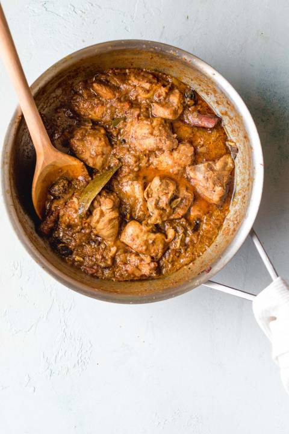
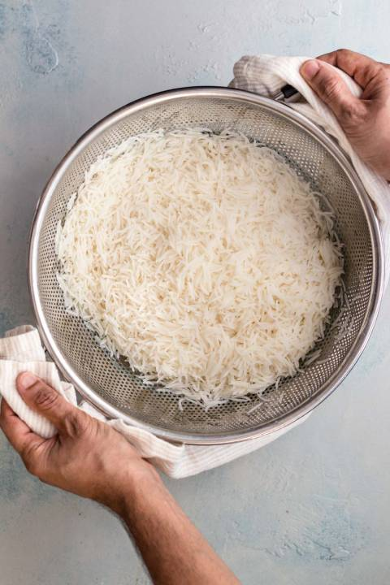
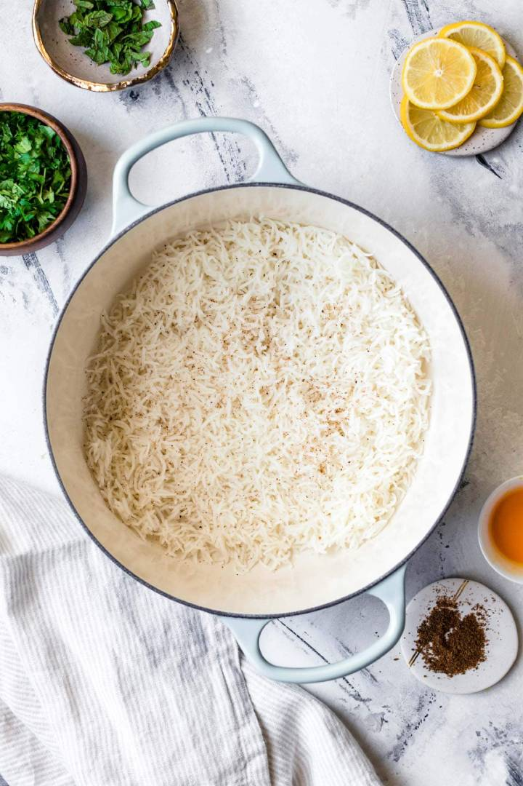
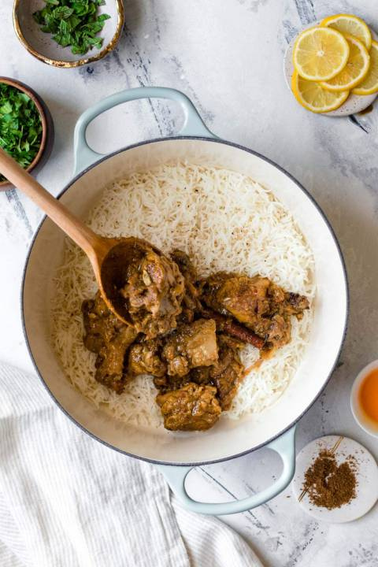

Biryani is an intricate rice dish made with layers of curried meat and rice. Given its use of adornments and luxurious finishes, it’s no surprise that biry ani has roots in Persian cuisine.
There are two main methods of making biryani:
Karachi (raw) biryani, made with raw meat and parboiled rice and cooked together, and
Pakki (cooked) biryani, in which cooked meat and parboiled rice are steamed together.
In Pakistan, pakki (or cooked) biryani is most common, with several prominent varieties such as Sindhi, Karachi-style, and Bombay biryani. This recipe is an amalgamation of these styles and is similar to what you’d find at a typical Pakistani or Indian restaurant or dinner party.
I’ve intentionally chosen the ingredients and quantities to give this biryani a strong foundation. That said, this recipe can take quite a bit of substitutions and adaptations and still be excellent.
I believe this recipe is as easy as an authentic biryani recipe can be no superfluous or tedious steps that don’t contribute to big flavor. You’ll find that while it takes time, most of it is passive cooking time. And the end result is quite rewarding and impressive. These are 3 parts to making chicken biryani:
Prepare the biryani masala (or use store-bought) and marinate the chicken.
Cook the chicken curry. While it’s cooking over low heat, prepare the rice.
Bring a pot of water to a boil and parboil the rice. Drain and set aside.
Layer half of the rice, all of the chicken, and then the remaining rice on top. Add the finishing touches.
Allow steam to develop, then lower the heat and let the flavors meld.
 Pakistani biryani is heavy on spice (and flavor!), and is often made with biryani masala, or simply put, a medley of spices that come together to give it a distinct, masaledar (or spice-laden) taste.
I recommend you use the biryani masala recipe below (all you need is a good spice grinder and a few extra whole spices). If you’d prefer not to, you can substitute your favorite store-bought biryani masala. This recipe has been tested and works great with Bombay Biryani Masala.
To make Biryani masala for this recipe, combine the following ingredients in a spice grinder and process until mostly smooth. Makes ~2 tbsp, which is the exact quantity you’ll need for this recipe.
NoteYou don’t have to have every single one of these spices to make a wonderful biryani. Don’t worry if you’re missing some – it’ll still give your biryani exceptional flavor!